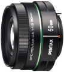

该镜头在APS-C画幅机身上等效焦距为76.5mm。镜头最大光圈f/1.8，7片圆形光圈叶片，可拍摄出美丽的背景虚化效果，适用于人像、静物、低光照环境下摄影。此外，镜头前部表面镀有该公司独创SP（Super Protect）涂层，防水、防油性能更为出色。
好头！期待！
全开成像应该不错！
塑料卡口不耐用！
用过才知道好的镜头
1.对焦比套头强 2.色彩还原强，在真实与宾得味之间 3.焦外不错，比佳能小痰盂强 4.小巧轻便 5.传说在胶片机上可用，也就是说。。。。 6.大光圈，看看宾得原厂的数码镜头，DA系列中光圈最大，DA、FA系列中排前三
1.对焦声音略大，分贝和小痰盂有一拼 2.塑料屁股，贴纸标识